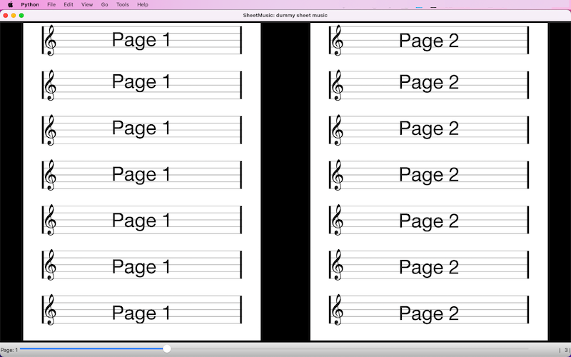
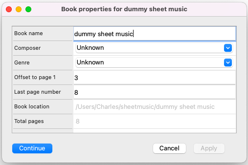
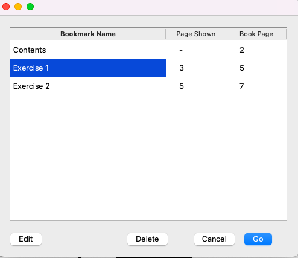
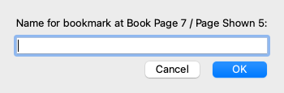
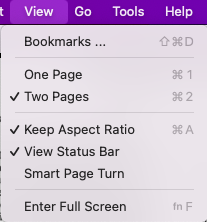

General Usage
This program's screen is split into three parts: menu, page display, and status bar. The purpose is to allow you to control the program and display contents of sheet music you have in your system.
As detailed in the PDF import page, the program will import and organise PDFs that contain sheet music.
It allows you to have bookmarks to help you access pages quickly, remembers settings, and has display settings to aid the display and
navigation throughout the document.
Screen layout

The screen is split into three different sections:
- Menu - Options for picking sheet music, importing files, and how to display the current document are available
in here.
- Page Display - The main portion of the screen is used to display the current pages of the sheet music.
- Status Bar - The status bar is where page information and current relative location are displayed.
Menu
The menus, and options, available are:
- File
- Open
- Open Recent > This will show a list of the most recent books that have been opened.
The number of books shown can be set in Preferences panel.
- Close Close the current document.
- Delete... Delete one or more books from the system. This will remove all the converted pages and the database entries for the book. This cannot be undone.
- Import Music
- Import PDF Import a PDF book into the system. See the import detail page.
- Reimport PDF Reimport a PDF book into the system. This is useful if you've made changes to the PDF, for example annotations, or if there are problems with the display resolution. See the reimport detail page.
- Import Directory of Books... If there is a complete directory of books to import, this will prompt you for a directory. You will need to fill in the import form for each book as it is imported. See the import detail page.
- Check for incomplete entries This will scan the database for any entries that have not been completed and will prompt you for the information.
- Edit
- Properties This will display, and allow you to edit, the current sheetmusic properties.

- Delete all bookmarks This will delete all the bookmarks for the current book. This cannot be undone.
- View
- Bookmarks... Display a list of the current booksmarks. This allows section, or deletion, of a bookmark stored for this book.

- One Page Display one page at a time.
- Two pages Display to pages at a time, side-by-side.
- Keep Aspect Ratio Book pages and the screen size may not match. This option forces the page
to keep the same relative size on the screen. If turned off, this will fill the screen with the page. This usually
distorts the image to some degree. The default is on
- View Status Bar The status bar can be hidden or displayed with this option. It
acts as a toggle showing or hiding the status bar when clicked.
- Smart Page Turn Smart Page Turn is used when the View is set to Two pages. This allows one page to be played while the next page is being displayed.
The new page will have a 'glow' that displays for a short period of time to show you that it is the new page. For example
| Page Left |
Page Right |
Action |
| 3 |
4 |
|
| * 5 *
| 4 |
After 'Next Page' |
| 5 |
* 6 * |
After 'Next Page' |
| 4 |
5 |
'Previous Page' |
| 4 |
* 3 * |
'Previous Page' |
| * 2 * |
3 |
'Previous Page' |
| 2 |
* 1 * |
'Previous Page' |
- Go These options allow you to navigate through the document. Keys are available to make navigation much easier and can
be setup in the Preferences Panel, key modifiers
- Previous Page
- Next Page
- First Page
- Last Page
- Go To Page
- Previous Bookmark
- Next Bookmark
- Tools
- Bookmark Current Page A prompt for the bookmark name will appear and a bookmark will be created for the current page.

- Add Bookmark
- Clean DB
- Backup DB To File
Page Display
The page display is where the sheetmusic will be displayed. The format and layout are controlled in with the View menu options.
The last page displayed will be remembered and will be re-loaded when the program restarts or the book is reopened.
Status Bar
The Status Bar is split into three parts:
- Left: Current page display

- Center: Page slider
- Right: Absolute page display
More information on page numbering can be found in the page numbering detail page.
- Current page displayed Pages can be either the 'Book' page or the absolute page. A book page will match the page number
displayed on the page, but it may not be the actual page. For example, the book may contain a cover page and an introduction page.
These often have no page number assigned, or they get a roman numeral page number (e.g. I, II, III, IV, etc). The sheetmusic may starting
on the 2nd or 5th page within the book that has been converted. This gives us two different page numbering schemes: Book page and
absolute page (starting with the cover page, for example). This can be very confusing. Within the book's properties you will find
the starting page number. This should be set to the absolute page's number.
More clarification can be found in the page numbering refrence.
- Page Slider This is a visual representation of the position of the page relative to the book. Sliding this left or right
will move the page back and forth. This allows rapid sweeping through the current book.
- Absolute page display While the Current page displayed will show you either Book or absolute page, this will
only display the absolute page number within the book.
The status bar can be turned off by clicking the menu option Status Bar under View.
